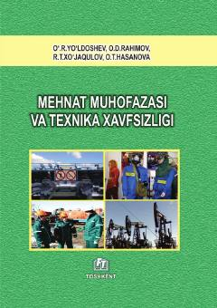

MMMehnat muhofazasi va texnika xavfsizligi bo‘yicha kasb-hunar kollejlari uchun o‘quv qo‘llanma.
Ushbu o‘quv qo‘llanma mehnat muhofazasi fanining nazariy, huquqiy va tashkiliy asoslarini, ishlab chiqarish sanitariyasi hamda yong‘in xavfsizligi qoidalarini yoritib beradi. Kitobda ishlab chiqarishdagi xavfli omillar, ularning oldini olish usullari va jarohatlanganda birinchi tibbiy yordam ko‘rsatish tartiblari batafsil bayon etilgan.